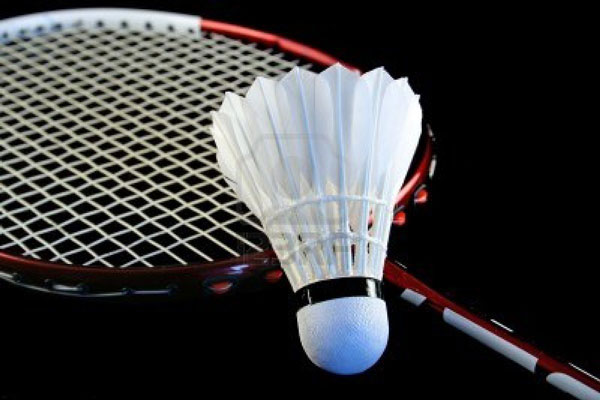

Hallo nama saya Gilbert Siregar. Teman - Teman saya biasa memanggil saya Gil. Saya merupakan seorang pelajar kelas 2 SMK di SMK - SMAK Bogor. Usia saya sekarang 16 tahun, saya lahir di Bogor tanggal 15 Juli 2001. Saya tinggal bersama orang tua saya di Jl. Jati Tengah I Blok B no. 80 RT 002/009 , Bekasi Timur namun sekarang saya nge kost di Jl. Binamarga II No.2, Bogor. Saya adalah seorang anak laki - laki yang mempunyai golongan darah O. Menurut quotes yang sering saya baca sih orang yang bergolongan darah O biasanya mengerjakan tugas ketika udah mau deadline. Ternyata benar lho, seperti saya yang saat ini. Di sekolah, dalam seminggu saya harus melakukan 5 praktikum wajib. Setelah melakukan praktikum, saya harus mengerjakan lapsus, ditambah lagi dengan tugas tugas dan ulangan harian yang bisa dikatakan banyak wkwkwk. Saya merupakan orang yang mudah stress, saat banyak tugas - tugas biasanya saya langsung merasa stress karena berfikir 'tidak dapat menyelesaikannya tepat waktu wkwkwk.
Saya mempunyai banyak hobi, salah satunya yaitu bermain bulutangkis. Saya suka bermain bulutangkis degnan teman - teman saya. Namun sejak saya masuk sekoolah SMK -SMAKBo ini saya merasa hampir sudah tidak pernah lagi untuk bermain bulutangkis. Hmmm. Saat bermain bulutangkis, saya selalu merasa bahwa saya yang paling handal di dalam permainan tersebut. Meskipun saya sangat suka bermain bulutangkis, namun saya tidak pernah mengikuti turnamen ataupun olimpiade bulutangkis :( dan karena saya masih anak sekolah, uang jajan saya tidak sebanyak itu untuk mendaftar ke ajang olimpiade atau turnamen semacam itu. Biasanya saya hanya berlatih - latih dengan teman - teman saya yang suka juga dengan permainan bulutangkis. Saat - saat seperti itulah saya merasa kalau hubungan saya dengan teman - teman lama saya masih baik - baik saja. Karena saya banyak mendengar kabar kalau sudah tidak bersama di satu sekolah lagi cenderung sombong sastu sama lain. Tapi tidak berlaku kepada saya dan teman - teman saya. Hobi saya yang lain yaitu berenang. Saya suka berenang, karena berenang juga memiliki dampak positif salah satu nya yaitu katanya menambah tinggi badan wkwkw.

Masih seputar berenang, mungkin banyak ya yang nanya kenapa saya begitu sukav bermain bulutangkis kan ? Nih saya jawab... Saya akui, permainan bulutangkis itu memang tidak sepopuler dengan permainan Futsal. Tapi saya masih tetap memilih untuk bermain bulutangkis dibandingkan permainan futsal karena sudah sejak saya kecil saya diajarkan berbagai permainan oleh ayah saya. Diantara banyaknya permainan yang beliau ajarkan ke saya, entah kenapa saya lebih cekatan di permainan bulutangkis dibandingkan permainan lainnya terutama futsal. Dan semenjak saat itu saya terus berlatih bulutangkis dan mendalami setiap pelajaran - pelajaran yang bisa saya ambil di permainan tersebut. Kok jadi cerita begini sih ???? Ya sudah lah ah wkwkwk. Itu saja ya tentang biodata saya. ( Jangan kebanyakan, malu euy ! ) Terimakasihhhhh.....